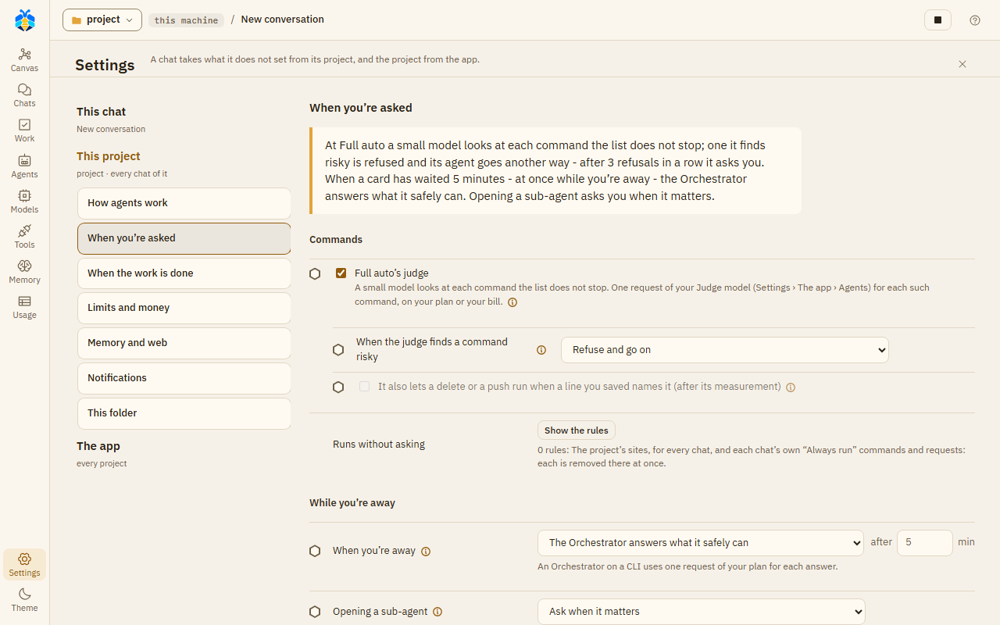
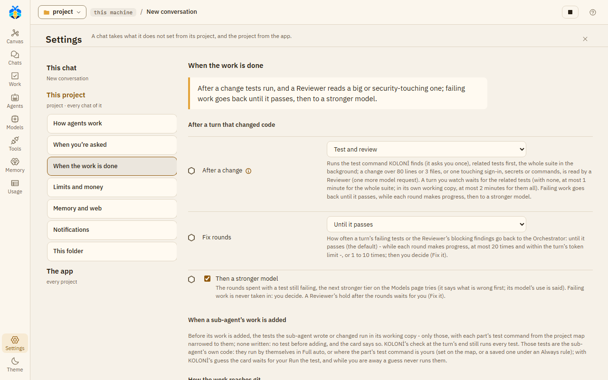

Settings¶
The Settings page holds everything you set for one chat, for one project and for KOLONİ as a whole.
Opening Settings¶
- Press Settings (the gear) at the bottom of the left rail. It opens on This project, or on The app for a chat with no folder. Press it again, or the close button, to close the page.
- Or press Ctrl+K and choose Settings. Ctrl+K also lists each section by name (the app's with "(the app)" after it), and opens Settings right at it. A section's name before 0.1.10 finds it too: "Asking and away" finds When you're asked; one folded into another is listed by its old name after the one it is in now - How agents work › Slash commands - and opens it there, its More or rules shown.
- Under the message box, Chat settings (Settings in a narrow chat) opens this chat's short sheet; its All settings opens Settings at This chat.
Choosing another page on the rail closes Settings. The chat under it stays as it was, so a message you were typing is kept.
Three levels¶
The levels are listed on the left, always in this order, each with its sections under it:
| Level | What it covers |
|---|---|
| This chat | The open chat's own settings. Shown while a chat is open. |
| This project | The project of the open chat. Shown only when the chat has a folder. Every chat of the project follows it, the ones made before too. |
| The app | The whole app, in every project. Always there. |
A chat takes what it does not set from its project, and the project from the app. Each setting is set at one level only: This chat shows what it takes from the project, read only, with a link up. What you type at one level is kept while you look at another.
How a section reads¶
Each section of This project and The app first reads itself in a sentence or two: what happens now, made from its values as they stand - "At Full auto a small model looks at each command the list does not stop; one it finds risky is refused…". Change a setting and the sentence changes with it, before anything is saved.
Beside each setting a honeycomb cell says where its value comes from, and the foot of the section says what the cells mean:
| Cell | Means |
|---|---|
| Full honey | set here: this project (or the app) has its own value. |
| An empty rim | the default: as a new project (or a new KOLONİ) has it. |
| Light honey | changed, not saved: you changed it here and have not saved it yet. |
The settings few change are under a section's More (More limits in Limits and money and in The app › Agents), closed until you open it. Its button says how many settings it holds and names those set here - "· 6 settings, 1 set here: secret files are not hidden from commands" - so a closed one never hides a setting of yours unsaid (When you're asked's sentence says them too, "Under More: …"). It stays open, and says so, while one of them holds a value that cannot be saved.
Saving¶
A section's Save is in a bar at its foot, there only while something in the section is changed. The bar says what, in a status line a screen reader reads out: "2 changes not saved: When the judge finds a command risky, When you're away" - or that a value cannot be saved yet, with Save off until it is fixed. After saving, the bar goes, "Saved" stays in that line, and the focus goes to it. Enter in a field saves only where something changed.
A section with changes you have not saved shows a not saved tag next to its name in the list. You can move between sections without losing those changes. Some rows save on their own, with no Save: Runs without asking's rules, Slash commands and This folder's map. This chat's settings take effect as you change them.
This chat¶
The same rows as the sheet Chat settings opens under the message box:
| Setting | What it does |
|---|---|
| Teams | Who picks this chat's teams, and the ones picked. Set with the Teams button over the canvas. |
| Folders | Where this chat's agents work, and its other folders. Set with the folder button. |
| Page scripts | Ask each time or Always run in this chat, for a page an agent shows in the Workspace. Also offered over the page's preview. |
| Runs without asking | A project's chat: how many rules it has, and a link to This project › When you're asked, its rules shown. A chat with no folder keeps its own list here. |
Its permission level, Plan first and its model stay under the message box. Under them, From the project lists what the chat takes from its project (who changes the files, opening a sub-agent, when you're away, the agents' limits, money, where commands run) with Change in This project, and Change in The app leads to the app's. A chat with no folder says that its sub-agents use KOLONİ's defaults: ask when it matters, 2 at the same time, 2 levels, 6 per request.
This project¶
The sections are listed on the left, in this order, each by its job (0.1.10: eleven became seven, and no setting is gone - what few change is under More):
| Section | Holds (its name before 0.1.10) |
|---|---|
| How agents work | Agents · New chats start with · Slash commands, under More |
| When you're asked | Asking and away · Runs without asking · Commands and secrets, under More |
| When the work is done | Checks and git |
| Limits and money | Limits and money |
| Memory and web | Memory and web |
| Notifications | Notifications |
| This folder | This folder |
How agents work¶
"Every chat of this project follows these, the ones made before too." Its sentence: who changes the files, the Scout's follow-up tasks, and what a new chat starts with.
Agents¶
| Setting | What it does |
|---|---|
| Who changes the files | Orchestrator delegates the work: it plans, asks and checks; sub-agents change the files. Orchestrator decides: a small change (one or two files, a few lines) it makes itself, bigger work goes to a sub-agent. Orchestrator does it itself: it changes the files itself, and may still hand a part to a sub-agent. |
| Suggest follow-up tasks after each turn | On by default. After a turn that did something, the Scout - the role that looks for what is left - proposes at most three follow-up tasks for the To-do list; they wait for your Add to To-do, Edit or Not wanted. One small model request per such turn, made once the turn is over, and at Full auto in a turn you started one more for the Orchestrator's decision. Follow-up tasks from picks the tier: Fast tier (the default), Balanced tier or Strongest tier. |
New chats start with¶
"A new chat of this project starts with these; each chat then sets its own." Its teams are in sight; its other folders are under More.
| Setting | What it does |
|---|---|
| New chats' teams | Orchestrator decides, Manual or No teams. With Manual, the teams a chat kept with Use for new chats in this project. |
| Other folders | The folders a new chat starts with, besides the project. Remove one here; add one from a chat's folder button with Keep for this project. |
Slash commands¶
Under More: your own commands for the message box. Each has a Name, What it does, the Text it puts in the box, and can Hand it to a role. Tick In every project to use it everywhere. Add command saves a new one; Edit and Delete change the list.
When you're asked¶
Its sentence says what Full auto's judge does now, who answers a card that waits, and when a sub-agent asks - and, "Under More: …", what is set under its More. Its parts are Commands, While you're away and More.
Commands¶

Settings › This project, at When you're asked.
| Setting | What it does |
|---|---|
| Full auto's judge | On by default, in new projects and in the ones you had. At Full auto - in a chat you watch, a To-do task done in a chat, and a job while you're away - a command the list does not stop is first sent to a small model, your Judge model (The app › Agents) - since 0.1.10, in a chat you watch, a delete in the project, git work thrown away and a stop by name too, written as a plain line, which the list asked of before (which), and since 0.1.11 a plain push of your feature branch to its origin (which; one it finds risky waits on its card, never refused): one it finds risky is refused and the agent goes on, or waits for you on a card - as When the judge finds a command risky below says -, and a job while you're away parks it for you and goes on. Reads, ordinary work (tests, compilers and checkers, local git), and your own test command (unless it runs a program an agent wrote) are not asked about; it never lets a command run that asks - one it gave no answer for, or may not ask about now (no room on its model's provider, the turn past its token limit - said once in the chat), waits for you on a card at either choice, and so does each where there is no model to ask, said once in the chat. Its card's Don't ask about this line again here keeps the line in this project, offered only where the judge itself looked at it and KOLONİ knows all the line runs: a project file it runs in a plain form (python x.py, make, npm run x, docker build .), or one plain curl, wget or file command (cp, mv, rm, mkdir…); any other line - git too - is asked about each time. One request of your Judge model for each such command. The same switch is in the level menu, under the levels. Off: Full auto as before. Since 0.1.11 the judge reads new words, "D2". See Full auto's judge. |
| When the judge finds a command risky | Under Full auto's judge, and only while it is on: Refuse and go on (the default, in new projects and in the ones you had) or Ask me. Refuse and go on works as Claude Code's auto mode: the command does not run and no card opens - its agent is told a general reason ("KOLONİ's judge refused this as risky (it may send data off this machine, …). Do it another way, or ask the user.") - never the judge's sentence, which may quote your messages - and goes on; you see the sentence: the command's row says refused with KOLONİ's judge refused: … under it, and Decided for you lists it until you press OK. After 3 refusals in a row (a command that runs ends a row) or 20 in a turn, by any of its agents, each risky one waits on its card for the rest of the turn (said once in the chat). Ask me puts it on a card, "KOLONİ's judge: …", as before 0.1.9's change. Only the judge's own "risky" is refused: a card the list opens (a push, a secret, a delete out of the project…), and one the judge gave no verdict for (no answer in time, none it could read, no room to ask, a command too long or with orders in it), stays a card either way - and a job while you're away always parks it for you. The Don't ask about this line again here box is on Ask me's card only. See Full auto's judge. |
| It also lets a delete or a push run when a line you saved names it | Under Full auto's judge: Check what I said first, a question of the judge's since 0.1.9 - it replaces the row A harmful-looking command at Full auto. It works only once your Judge model's measurement has passed - none has yet (Claude Code's haiku, measured on 25 Nov 2026, did not): the box says (after its measurement) and cannot be ticked - or in a project where you had turned Check what I said first on: its box comes ticked there, and you may untick it. With the box unticked, a push or a send waits for you on a card at Full auto - one that quotes you, one click, where this turn's messages (the one that started it, or one you sent into it with Send now) asked for a push, a pull request or a merge (how) -, except a plain push of your feature branch, which goes to Full auto's judge (which); a delete in the project goes to the judge too (with the judge off, its card). A force push or a branch deleted on the remote waits on a card at every level, whatever you said. Where it works, your Judge model (The app › Agents) first reads your preferences, this project's rules as saved on the Memory page and your own messages in this chat (while you're away, in the chat you went away from) - not the folder's .koloni/rules.md, nor anything an agent wrote - and the command runs without a card only when a whole line of yours names it and what it touches ("You may delete build/ and dist/.") - one that forbids nothing and sets no condition. A line of your preferences never runs a command, it can only stop one; and of your messages, only this turn's run a push, a pull request or a merge, never an earlier turn's (this project's rules still can). A command a whole sentence of yours forbids ("Never push to main.") is not run and opens no card: the agent is told your sentence (of a message of yours in the chat, only that one of yours forbids it - the sentence itself stays with you), and not to run it again or anything that does the same, and carries on with the rest of its task. A sentence that sets a condition or asks to be asked ("unless", "ask me before") keeps the card, and so does a line that forbids the same delete beside one that allows it ("Never delete ./x." and "You may delete ./x."). Either way the command says which sentence it rested on, and waits under "Decided for you" until you press OK. After 3 such refusals in a row, or 10 in one turn, KOLONİ says so in the chat, and the rest of that turn asks you on a card. Secret files, .koloni, files that steer later turns, paths outside the folder, a delete or a send of the whole folder, a force push, and a CLI's command whose folder is not known are always asked, and anything that goes wrong - no model to ask, over the budget, a slow or unreadable answer - opens the card as before. Each such command is one request of your Judge model (on a CLI, of your plan). |
Runs without asking¶
The last row under Commands, saying how many rules there are ("2 rules"), with Show the rules: each is removed there at once, not by Save.
- Sites agents open: the agents' own browsers open these in every chat of this project without asking, unless marked Ask first. Add one with Allow site.
- Commands and requests, by chat: the rules made with Always run on a card, grouped by chat. Remove one with its ✕. You can also allow plain GET requests to a host for a chat.
See Permission levels for what a rule can and cannot cover.
While you're away¶
| Setting | What it does |
|---|---|
| When you're away | Everything waits for you, or The Orchestrator answers what it safely can, after a number of minutes (0 to 1440; a new project: the second, after 5 minutes). With the second, once you haven't answered for that long - at once while you're away (☾ Away on a chat's line) - the Orchestrator picks, says why, and you see it under "Decided for you". It opens a sub-agent on its role's own model unless that model is at its limit, out of credit, or over this month's budget; a move onto another model that may cost money, commands it may not run, deleting, reaching outside and Take in still wait. An Orchestrator on a CLI uses one request of your plan for each answer. |
| Opening a sub-agent | Ask when it matters, Always ask or Never ask. With Never ask, sub-agents open on their own in every chat of this project. |
More¶
Under More, closed until you open it: disposable deletes first, then, under the heading "Run commands on", where commands run and what they may see (until 0.1.10 the section Commands and secrets).
| Setting | What it does |
|---|---|
| Agents may delete what is disposable without asking | Off by default. At Auto-edit files and Full auto, in a chat you started, a delete KOLONİ checks is disposable runs without a card: a build or cache folder (build, dist, __pycache__, .pytest_cache, .ruff_cache, .mypy_cache, coverage, .next, .turbo, target) below where the command runs, spelt as it is on disk, that git ignores, holding no file git tracks or does not ignore, no link and no repository of its own; a worktree of yours that git lists, not locked and not one of KOLONİ's, holding nothing its commits do not, no link, no secret file and nothing else git ignores; a local branch that neither the project, the turn nor any worktree stands on (with -D, only one whose commits the default branch has). Only such a delete alone on its line, in its shell's own form (in PowerShell, KOLONİ's own commands on Windows: Remove-Item -Recurse dist or rm -r build, never rm -rf; in sh, on Linux, macOS, Docker and Claude Code's Bash tool: rm -rf build; git's git worktree remove ../wt/x and git branch -d old in any), never a forced worktree remove; a folder's delete by Codex or agy, whose shell is not said, keeps its card; worktrees and branches only by the Orchestrator in the project. Its row says "Ran without asking · disposable: …", or, where it then failed, "… and failed: exit 1". At Ask before changes it still asks. The card of such a delete offers Allow such deletes in this project, which turns this on. See Disposable deletes. |
| This machine | Commands use the project's own tools as they are. They are not isolated. The page also says which shell commands run in. |
| Docker container | A fresh container for each command, with this folder mounted. Only the folder is kept. Needs Docker running. Then: Image (for example python:3.12, never pulled for you) and Allow network access. On Linux and macOS a command runs as your user, not as root, so the files it makes are yours, except under rootless Docker. |
| Longest command (minutes) | 10 by default, at most 60: the most an agent's command may ask for (one still stops after 2 minutes unless it asks for more), and how long KOLONİ's own test runs are given (the whole suite after a change, a job's tests while you're away). Raise it for a test suite or build that takes longer. A command that keeps running (a dev server) has no limit. A CLI working with its own tools (Native) runs its own commands under its own limits, and Codex run Native still ends its turn when one of its own commands runs past 11 minutes. |
| Hide secret files from commands | On by default. Covers commands in Docker and in Copilot's sandbox. |
| Secret variables commands may see | Environment variables with secret names are held back from commands and CLIs. Name the ones they may see, separated by commas, for example OPENAI_API_KEY, NPM_TOKEN. The page lists what is held back. Copilot's commands never get GH_TOKEN, GITHUB_TOKEN or COPILOT_*, whatever you name here: it signs in its own way. |
| Planted test key (canary) | On by default. Each message's commands get a made-up key that no agent is told of. A command, web request, browser or MCP call that would send it out is refused and the work stops: something the agent read may have told it to. |
When the work is done¶
Its sentence says what runs after a change, how far failing work goes back, and how the work reaches git. Check by kind of work, Found by KOLONİ and Measure command are under More; what runs before a sub-agent's work is added is said in sight.
After a turn that changed code¶

Check by kind of work and Found by KOLONİ are its rows under More.
| Setting | What it does |
|---|---|
| After a change | Test and review (the default) or Tests only: after a turn that changed code, KOLONİ runs this project's tests once on the work as it now stands and says under the answer what was checked and what was not; under Test and review, a big or security-touching change is looked over by a read-only Reviewer too. Failing tests and its blocking findings go back to the Orchestrator until it passes, or as many times as Fix rounds says; then, with Then a stronger model on (the default), the next stronger tier on the Models page tries the fix, and failing work is never taken in (A stronger model). In a turn you watch the answer waits for the tests related to the change (with none, at most 1 minute for the whole suite), and the whole suite goes on after it; where the work is in its own working copy it waits at most 2 minutes for them all (How long it waits). Nothing runs nothing, and the Checked lines still say so. A project that had turned off the old Finish only when the tests pass switch is on Nothing, and says so here. One chat can differ: Test and review changes in its permission level's menu (for one chat). |
| Fix rounds | Until it passes (the default), or 1 to 10: how often a turn's failing tests, a sure problem in what it wrote, and the Reviewer's blocking findings go back to the Orchestrator - one count for all of them. Until it passes goes on while each round makes progress, and stops where a round changed nothing, at the turn's token limit or the monthly budget, or after 20 rounds - saying why. Then you decide (Fix it), or a stronger model tries (below). A project still on the old default, 2, moved to Until it passes; a number you chose is kept. A recipe's Checks step may set its own (The Checks step). See When the tests fail. |
| Then a stronger model | On unless you turn it off. The rounds spent with a test still failing, the next stronger tier on the Models page tries the fix - it says what is wrong first, and its model's use is said; failing work is never taken in, at any level: you decide (Take in anyway or Fix it). Off, the work waits after the first model's rounds. A Reviewer's hold is not handed on: you decide. See A stronger model. |
| Check by kind of work | Documents · Slides · Diagrams · Data · Pages · Config · Scripts · Code style and types · A test for the change; all on but Pages and A test for the change, which are off unless you tick them (since 0.1.10). Under Test and review, after a turn that wrote such files, KOLONİ checks them without a model - links and headings, whether a diagram parses and is connected, CSV rows and notebook cells, empty slides, JSON, YAML and TOML files that parse (a package.json, pyproject.toml, GitHub workflow or Compose file in its expected shape), shell and PowerShell scripts that parse (read by their own shell, never run), the project's own ruff, eslint, tsc and mypy where it has them (each asks before it runs unasked, a yes for that line); with Pages, a changed page (or the running preview, for a component) in its own browser at 375, 768 and 1280 px, for console errors, sideways scrolling and accessibility - and a sure problem goes back as a fix round. A test for the change asks the Orchestrator once for a test where code changed and no test did, under Tests only too. Untick a kind to leave it unchecked; the answer then says "Not checked: slides switched off for this project". See Checked, Pages and A test for the change. |
| Found by KOLONİ | Shown only where KOLONİ saved a test command itself: each, by folder, with where it came from (the project's files, an agent's run, or its look at the code) and when. Forget it clears them, found again at the next change. Yours (a part's test command) always wins. See Checked. |
When a sub-agent's work is added¶
Before a sub-agent's work is added, the tests it wrote or changed run in its working copy - only those, each part's test command from the project map narrowed to them (python -m pytest -q tests/test_new.py). None written: no test before adding, and its card says so; KOLONİ's check at the turn's end still runs every test. There is no command to fill in for it (0.1.7: Test before adding is gone).
How the work reaches git¶
| Setting | What it does |
|---|---|
| Save each sub-agent's work as a git commit | One commit per piece of work, offered on the card once the changes are in, and only where this folder is the top of a git repository. It is always your click, never made by itself, and nothing is pushed. |
| How a team's finished branch reaches yours | Merge here or Open a pull request. If you have not chosen, the first finished branch on a GitHub project asks. |
Under More, with Check by kind of work and Found by KOLONİ:
| Setting | What it does |
|---|---|
| Measure command | A command whose last line of output is a score from 0 to 100, for example python measure.py. Recipes use it to pick the best of several candidates. |
Limits and money¶
Two are in sight: Monthly budget and Stop the work on a message over this many tokens, a job's budget. The rest are under More limits, closed until you open it; it says how many there are and how many are set here (· 6 settings, all at their defaults), and stays open while one holds a value that cannot be saved - Save is off until it is fixed. A provider's own limits are on its Limits tab (Models), and a night's limits on the Go away card.
| Setting | What it does |
|---|---|
| Monthly budget | For this calendar month's messages, in the currency of your prices (else USD). At 80% you are told. At 100% a new message asks before its work starts. Work on a model with no price is not counted. |
| Stop the work on a message over this many tokens | A job's budget, in tokens: all the agents working on one message together - yours, a To-do task's, or a job's while you're away. Over it, the work stops as failed and says so: "this turn used N tokens, over the project's limit of M". A job tried again, or a message that goes on with it, starts from zero. Only what a model reports is counted. Empty: no limit. See Usage. |
| At most this many agents at work in this project | Counted over all of this project's chats together. A new agent waits for a free place. Empty: no limit. |
| Agents at the same time | The most agents at work at once for one message. 1 to 32. Each provider has its own limit too. Above 8 the page warns that this may strain this machine and your subscription. |
| Sub-agent levels | How deep sub-agents may open their own, from 1 to 4. |
| Sub-agents per request | The most sub-agents opened for one message outside a recipe. 1 to 20. |
| Continue gives this many more steps | How many more steps Continue gives an agent that stopped at a step limit, on its card or on its kept work's card. 25 unless you change it, 1 to 200. A go on by message gives a new step limit instead. The step limit itself is the app's: Steps an agent may take, a link away. See Step limits. |
| A discussion's tokens, at most | A token budget for each discussion. Empty: no limit. Its speakers count toward the job's budget too: above that, the job stops first. See Discussions. |
Memory and web¶
Its sentence says what is noted by itself and where a web search asks. Also look in the memory of is under More.
| Setting | What it does |
|---|---|
| Note what the work found, by itself | After each message's work, a fast model writes at most three notes of what it found. One more model request after every message. Off by default. See Memory. |
| Also look in the memory of | Tick other projects. Agents' look-ups and your deep search find their memory too. |
| Search address (SearXNG) | Your own SearXNG server, for example http://localhost:8888. An agent's web search asks it first; turn on its JSON format. When it does not answer, the search goes on as below and says so. |
| Otherwise search with | The built-in search first, then a CLI or A CLI first, then the built-in search. |
| Let agy search too | Lets agy search the web. While it searches, agy is not held to its search tool: it may read files on this machine or open pages unasked. Shown with Show experimental features on (The app › Agents), or where it is already ticked. |
Notifications¶
Its sentence says whether a desktop notification shows and when the day's summary comes.
| Setting | What it does |
|---|---|
| Show a desktop notification | On Windows; on macOS (terminal-notifier where it is installed, else the system's own); on a Linux desktop with notify-send. Greyed out where none is there. Where an agent's notifications go, and what KOLONİ tells you while you are away; off, agents have no notify tool. At most 6 a minute for one chat. |
| Send the day's summary at | A time of day, by this computer's clock, for a daily summary: Usage's Today numbers for the project as text, counted from the record; no model is asked. Needs desktop notifications. If KOLONİ is closed then, it sends the summary late, when it next opens, and only for the last day it missed. |
This folder¶
Its sentence says which of the project's settings and rules the folder's .koloni/ keeps.
Project map is a table of the project's parts: Folder, Language, Files, AGENTS.md and
Test command. You can change a part's test command and save that row; Use guess puts back
the one KOLONİ found. A command you write there runs in its part's folder without a card, at
every level; saved empty, the part has no test. Where no project file makes the root a part, the
first row is ./, the whole project: a test command there runs from the project's root,
beside the other parts' commands (Which tests) - the place for the
command you had in Test before adding (gone in 0.1.7).
This folder's rules are shown when the folder has .koloni/rules.md. Read-only here; you change
the rules on the Memory page.
Delete project¶
Under This folder, Delete project… removes the project from KOLONİ: its chats with their messages, agents' work and usage, its memory, knowledge, To-do tasks and work while you're away. The dialog counts what goes, offers Export first (the same .zip as Export everything, without API keys), and deletes only once you type the project's name. It cannot be undone.
The folder on disk is not touched: its files, its git and its .koloni/ stay. Opening the folder again
makes it a new, empty project. What KOLONİ kept of its chats under runtime/ goes, as a chat's delete
takes it: their attachments and their CLI sessions.
While anything of the project is at work (a turn, a sub-agent, the To-do's turn, jobs while you're away), while a command it started still runs (such as a dev server), while finished work waits for Take in or Discard, or while its knowledge is learning, the delete is refused and says why.
The app¶
Agents, in every project¶
Its sentence says the language agents answer in, when a context is summarised, whom KOLONİ's judges ask and whether experimental features are offered. Answer in and Summarise a long context at (%) are in sight. The step limit, the two limits of a turn nobody watches, what knowledge reads and KOLONİ's test runs are under More limits, closed until you open it (it says how many are set here, and stays open while one holds a value that cannot be saved). The links between Steps an agent may take and Continue gives this many more steps open the other's More limits.
| Setting | What it does |
|---|---|
| Answer in | The language the agents write in, in every project. Auto means the language you write in. Pick one from the list (English, Türkçe, Deutsch, Español, Français, Italiano, Português) or type another. KOLONİ's own screens stay in English. |
| Steps an agent may take | The most model steps one sub-agent takes on a job before it stops: 25 unless you change it, a whole number from 5 to 200. Coordinators get more for their recipes. The Orchestrator counts no steps: it stops when it goes round in circles, or at its role's own limit if you set one. What Continue gives on top is each project's: This project › Limits and money, a link away. What happens at the limit, and who may give more: Step limits. |
| Stuck after this many minutes with no progress | In a To-do task's turn, and in a job while you're away, the Orchestrator's turn ends once nothing has moved for this long: no file of the turn changed, no agent finished its work, no failing command passed. Each of those starts the minutes again; a card waiting for you, a command or a model step under way, or an agent below the Orchestrator at work keeps them from running out. 30 unless you change it, a whole number from 5 to 1,440. The turn fails with the reason, its work kept; a To-do task gets its fix round, then is stuck, and its chat's queue goes on. See Step limits. |
| An unattended turn runs at most (hours) | A last resort: a To-do task's turn or a job while you're away ends after this many hours however it goes, its work kept. 8 unless you change it, a whole number from 1 to 72; empty: no limit, so a turn that keeps working (changes, agents at work, messages between agents) can run without end. |
| Summarise a long context at (%) | Once an agent's context passes this much of its model's window, the older part is summarised before its next step. A whole number from 50 to 95. It does not apply to a CLI run step by step. Claude Code run Native on its own sign-in for KOLONİ compacts its own session. GitHub Copilot run Native, and Codex run Native on its own sign-in, go on in their session only until it holds this much of 100,000 tokens (Copilot) or 166,000 (Codex), or of the window set on its role where that is smaller; the next turn then starts anew from KOLONİ's summary. Any other CLI starts each turn anew: KOLONİ compacts it, against its role's window or, with none set, the catalogue's for its model. See Set up a CLI. |
| Knowledge reads at most (files) | Knowledge from a repository or a folder on this machine stops before it reads more files than this: 50,000 unless you change it, a whole number from 100 to 1,000,000. A learning keeps what it started with. See Knowledge. |
| Knowledge reads at most (MB) | The same, in MB: 300 unless you change it, from 1 to 10,240. |
| KOLONİ's test runs at once | How many of the test runs KOLONİ makes at a turn's end go at the same time; the rest wait their turn. 1 unless you change it, a whole number from 1 to 4. More finishes sooner and loads the machine more. The agents' own commands are not counted. See Checked. |
| Test processes per run | How many processes one of KOLONİ's test runs may start, where its runner reads it (pytest-xdist's -n auto). 2 unless you change it, a whole number from 1 to 16. The agents' own commands are not limited. |
| Show experimental features | Below the rest, saved as you change it: off by default. Offers agy, and Native (a CLI with its own tools), under Experimental on the Models page, and Let agy search too in This project › Memory and web. It is less measured than the rest. A provider already set up so keeps working either way, tagged Experimental. Kept as you change it, without Save. See Experimental CLIs. |
| Judge model | Below the rest, saved as you change it: whom KOLONİ's judges ask, in every project - Full auto's judge, and its question of your words (Check what I said first). Fast tier's first (now: …), the first model of your Fast tier that answers with no tools, unless you choose one of the models listed (of every tier, those that answer with no tools - a CLI with tools of its own among them, such as GitHub Copilot CLI run Native, asked with them off). Kept as you change it, without Save. A choice that cannot be asked now (its provider gone, closed to agents or down) stays chosen and says so; the Fast tier's first is asked meanwhile. With none to ask, each command Full auto's judge would look at waits for you on a card, and the chat says why. On a CLI each such command waits for it to start. |
| Advisor model | Below the Judge model, saved as you change it: "A model the Orchestrator may ask for advice. It sees the Orchestrator's summary and the turn's recent steps, masked." - for its ask_advisor, at most 3 times a turn, in every project. Another provider's than the Orchestrator's unless you choose one of the models listed (the Judge model's list: those that answer with no tools): then a model on a provider other than the Orchestrator's, the strongest tier first. A choice that cannot be asked now stays chosen and says so. Each ask is one request of that model, in the turn's spend. See Talking while agents work. |
| New preferences from your words | Below the Advisor model, saved as you change it: what the Orchestrator does when you say in a chat how you want work done from now on, in every project. Add them, tell me (the default): your own sentence - never the model's wording - goes into Your preferences at once, and the chat says so, with Undo. Ask me first: a card in the chat shows your words and the line, with Add and Not now. Only a sentence of your own prose counts, never what you pasted. See Memory. |
Voice¶
Its sentence says whether Auto-read is on, what it reads, and whose voice reads aloud. This browser's, for every chat: Auto-read reads (the whole answer or a short summary), the Dictation language, Read aloud with the browser's own voice (its Rate and Pitch) or Read aloud with Gemini (a Gemini API key, and How Gemini says it), and How the Orchestrator speaks. Dictate and Read aloud stay beside the message box. See Voice.
Your data¶
Its sentence says what KOLONİ's data takes on this machine and how many places no agent opens.
Export: your KOLONİ data in one .zip: chats, agents, providers, memory, skills and
attachments. Not in it: your project folders (their .koloni/ knowledge too), working copies,
logs, previews, the CLIs' own folders and the database's own backups (before an upgrade, and daily).
- Include API keys and secrets (keep this file safe): without this, the keys KOLONİ stores in
its settings and secret files you attached to a chat (a
.env, a key file) are left out. A key that was ever written in a chat, in another file you attached, an agent's output or a command stays in the file either way, so keep the file private. - Export everything starts the download.
Restore: "Restore only a file you exported yourself: it decides which programs KOLONİ may start."
- Restore from a file… takes a
.zipyou exported. - Nothing changes at once. The restore replaces your data the next time KOLONİ starts: close KOLONİ and start it again. Until then you can Cancel it. Your data as it was is set aside, not deleted.
- After a restore, what starts by itself waits until you press Resume. To-do tasks that waited in a chat's queue are back on To-do, as at any start of KOLONİ: give them to a chat again.
- If the file had no keys, the page lists the providers that need theirs again.
Under them: how much space KOLONİ's database, backups, working copies and logs take; the working copies kept for your word - how many, what they take, and each one's chat, agent and when it was kept, with Discard, which asks first and deletes that copy as its card's Discard does (KOLONİ never deletes one unasked, so over 1 GB a line warns you); and Always blocked, the places no agent ever opens, in every project; the list is KOLONİ's own and cannot be changed here.
Settings kept in the folder¶
A few project settings are also written to the folder's .koloni/settings.json, so they travel
with the project in git: where commands run (this machine or Docker), the Docker image, Docker's
network access, and the web search order. The first time, the page says
"Saved in .koloni/ in this folder (kept in git)". Secrets, your addresses and this machine's
folders stay in KOLONİ only. Everything under The app stays in KOLONİ too.
When a folder's settings differ from KOLONİ's (for example, after a git pull from another
machine), the top of This project asks whether to use them, with Use them and Not now.